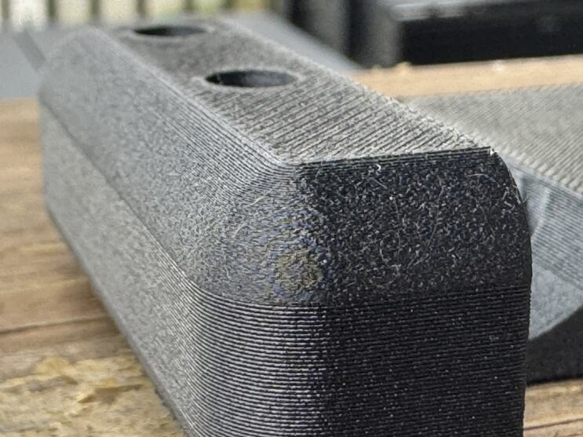

Landing 1 · Straight up
Layer height is not a knob.
A print is a stack of courses, and the layer height is how thick each one is. It sets the step on every lean, the gap over every support, and how often the nozzle passes the same edge. Change it and all three change.
Seen in PET-GF · Mark 1 and Mark2 · textured PEI · left 0.4 mmNot tried in: any other plastic
The landings, in PET-GF · the fifth, slicer support, has the next chapter
Straight up
One first layer and one layer height, on every part. This page.
Lean
Drawn at 45°. A round that starts on the bed starts as a chamfer.
Bridge
Slow, with extra plastic and the fan on. Out of sight.
Fin
A thin wall under a visible edge, one layer short of touching.

{{petgf:/initial_layer_print_height}} mm
the first layer, on the bed
{{petgf:/layer_height}} mm
every layer after it
Both live in the shared PET-GF project and every part inherits them. The first is the slicer’s default. Nobody has had a reason to move it.
Where a finer layer was ever allowed
AllowedA show round that turns inward as it rises.
NeverOver a support.
NeverOn an edge that grows outward.
Turning inward, every thin course lands on the one below. Over its supports, the fine courses of the front-top printed on Mark 1 on 3 October 2026 came down as spaghetti. The edge that grows outward is the bed-side round above, and the next page.
Still openOne recipe still carries fine layers: front-top, on two show rounds at the top of its print. Whether the instruction of 12 November, given about a fit coupon, retires them has not been asked.
How the fine layers went away
“…thin layers create a visible artifact that should only be used when absolutely necessary…”